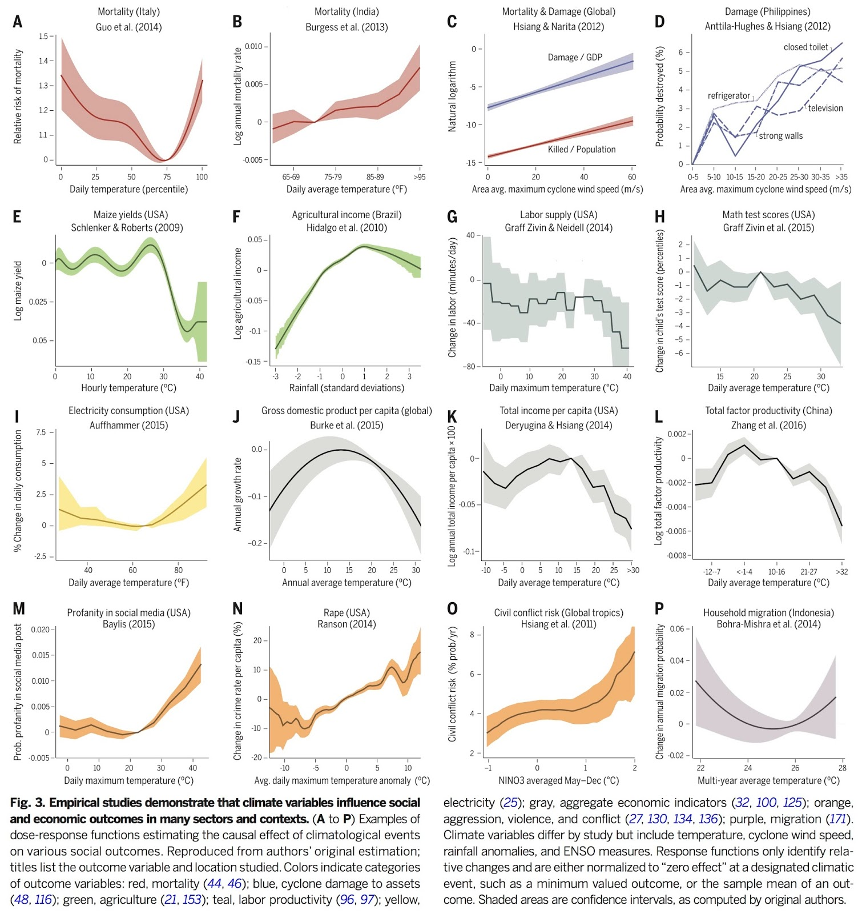
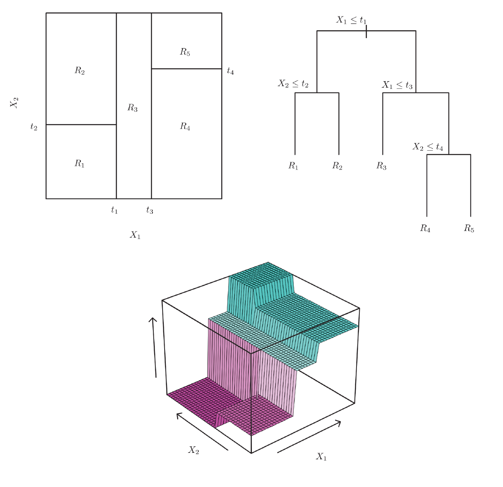
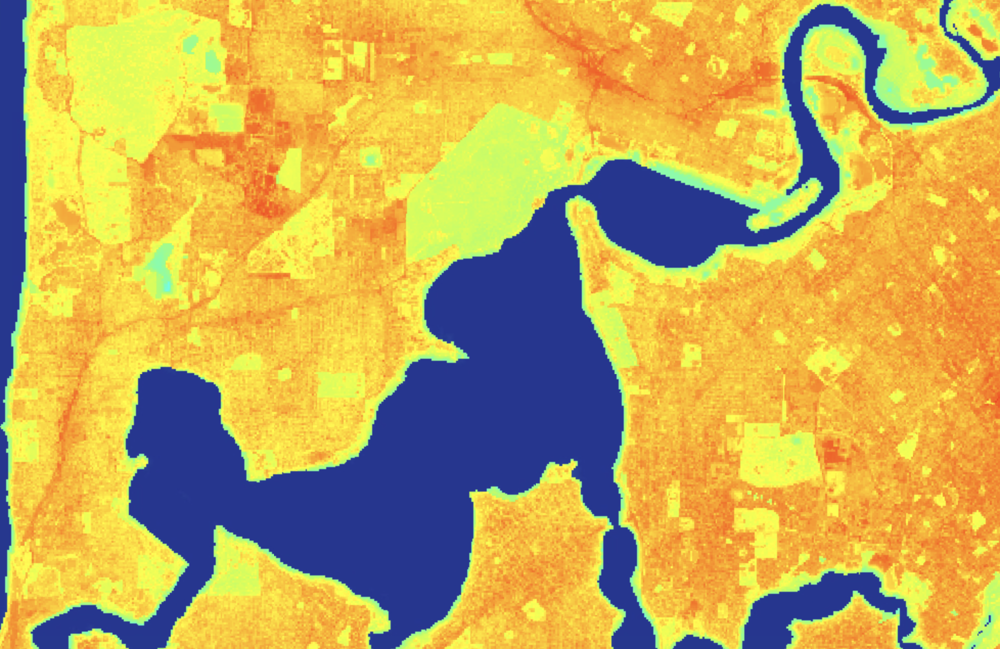

Introduction
You have already implemented a workflow to train and test a machine learning model to perform a classification task. A classification problem is when the outcome variable is qualitative (i.e. it can take on a value of one of \(K\) classes or categories). If the outcome variable is numerical and continuous this is a regression problem. This lab will introduce a workflow to train, test, and interpret a machine learning model for regression tasks.
You will use a range of predictor variables to train a model that predicts summer land surface temperature (LST) across a study area in Perth.
Predicting Land Surface Temperatures
Exposure to warmer temperatures can have adverse impacts on various indicators of well-being (see below figure from Carleton and Hsiang (2016)).
Populations in urban areas are exposed to warmer temperatures compared to rural populations - the urban heat island (UHI) effect. Land cover affects the temperature in urban areas; for example, trees can provide a cooling affect via evapotranspiration or shade. The ability to predict how different configurations of urban land cover affects temperature is important for planners seeking to develop urban areas in ways that minimise heat exposure. The Low Carbon Living CRC has produced a useful Guide to Urban Cooling Strategies demonstrating how different urban land cover types affect temperature.
In this lab you will use a range of spatial layers that represent the built environment to train and test a machine learning model that predicts urban LST. This model could be used for scenario analyses where the effect of different urban developments, which result in different land covers, on LST can be assessed.
Random Forests
Your goal will be to train a model \(f\) which relates predictor variables \(X\) to an outcome \(Y\).
\[Y = f(X)\]
Here, \(Y\) is LST which is a continuous variable. Therefore, the model \(\hat{f}\) that you train will be in regression mode. This will still be a supervised learning task where you have observations of LST, \(Y\), and predictor variables, \(X\), which you use train a model \(\hat{f}\) that learns rules to relate \(X\) to predicted LST values, \(\hat{Y}\).
The model you will be using is a Random Forests model. A Random Forests model comprises an ensemble of decision (regression) tree models. In regression mode, the final prediction is the average of the predictions from all the regression trees in the ensemble.
Regression Trees
First, let’s go through the process of training a single regression tree. A single regression tree divides the predictor space - the range of values the \(p\) predictor variables can take - into \(J\) distinct and non-overlapping regions \(R_{1}, R_{2},...R_{J}\). If an observation ends up in region \(R_{j}\) it takes on the response value assigned to that region. This is the mean of all response values for that region in the training data. When training a regression tree, your task is to determine the rules that best divide the predictor space into \(J\) regions by minimising an error or loss function.
First, you find the predictor variable \(X_{j}\) and cutpoint value \(s\) that splits the training data such that the residual sum of squares (RSS) of the response variable \(Y\) in the two regions generated by the split is minimised. For any \(j\) and \(s\) in your training data you can define two regions:
\[R_{1}(j,s) = \{X|X_{j} < s\} \: and \: R_{2}(j,s) = \{X|X_{j} ≥ s\}\]
and you seek \(X_{j}\) and \(s\) that minimises the sum of the RSS for the two regions \(R_{1}\) and \(R_{2}\):
\[ \sum_{i: x_{i} \in R_{1}(j,s)}(y_{i} - \hat{y}_{R1})^2 + \sum_{i: x_{i} \in R_{2}(j,s)}(y_{i} - \hat{y}_{R2})^2 \]
\(\hat{y}_{R1}\) is the mean of the response variable \(Y\) in the region \(R_{1}\) and \(\hat{y}_{R2}\) is the mean of the response variable \(Y\) in the region \(R_{2}\).
You recursively repeat this process for the data in each of the subsequent splits until a stopping criterion is reached (e.g. minimum number of training observations in a final leaf node or the maximum number of leaf nodes reached). The set of splits along predictor variables \(X\) and cutpoints \(s\) are the learned decision rules that determine how your model predicts \(\hat{y}_i\) for a set of known predictor variables \(x_{i}\).
The figure below illustrates the process of creating a regression tree by recursively splitting the training data into regions that minimise the RSS between the observed response value and average of the response values in a given region \(R_{(j,s)}\).

Random Forests
A Random Forests model is an ensemble of regression trees generated by taking bootstrap samples (sampling with replacement) from the training data and fitting a regression tree to each sample. One issue with a single regression tree is that is has high variance; if you train a model \(\hat{f}\) using different training datasets and you get different \(\hat{f}\)’s then that method has high variance. If you train a regression tree with sample 1, \(X_{1}\), and then train a regression tree with sample 2, \(X_{2}\), where both samples are drawn from the same population, small differences in the samples could result in different rules that characterise your trained regression trees \(\hat{f}_1\) and \(\hat{f}_2\). This will result in different predictions for the same input data.
Bootstrap aggregation (bagging) is a method to reduce the variance in predictions. You draw \(B\) training samples from your training data and train a regression tree \(\hat{f}_{b}\) for each \(1, 2,...B\) training samples. For each \(x_{i}\) your prediction is the average prediction returned from all \(\hat{f}_b(x)\).
\[ \hat{y}_{bag}(x) = \frac{1} {B} \sum_{b=1}^B \hat{f}_b(x)\]
This video provides an overview of bootstrap aggregation (bagging).
When you generate bagged training samples some of your initial training dataset are not used to train a given regression tree \(\hat{f}_b\). You can use these held-out data to compute the prediction error for a each regression tree by comparing predictions \(\hat{y}_i\) for these data points to observed values \(y_{i}\). This is termed the out-of-bag error. You can combine the out-of-bag error computed for each \(i\) observation in your training data to compute an overall out-of-bag mean square error (MSE) estimate for your bagged model.
Random Forests build on bagged tree models by decorrelating the decision trees within the ensemble. If there was one strong predictor variable in your training dataset, each time you train a regression tree using a bagged training sample you would expect this variable to be dominant in determining the first split in your tree. This would result in your regression trees having a similar structure and possibly missing relationships between other predictor variables and the response. Therefore, when training a Random Forests model at each split only \(m\) out of \(p\) predictor variables are considered. This decorrelates the regression trees in the Random Forests ensemble reducing the variance in predictions and capturing more information about the relationships between the predictors and the response variable.
Chapter 8 and Chapter 2 (section 2.2.2) of James et al. (2013) provide a clear and detailed explanation of Random Forests models.
This video also provides an overview of the process of training a Random Forests model.
Random Forests models are used for a variety of prediction tasks involving spatial data. Some of the advantages of random forests models are:
- Tree based models can easily handle qualitative and quantitative predictor variables.
- Random Forests models are relatively robust to being trained with large numbers of predictor variables
- Random Forests models handle (multiple) interactions between predictor variables (when the relationship between predictors and response is complex)
- Random Forests models can handle non-linear relationships between predictor variables and response variables
- Random Forests models generally have good predictive performance
- Random Forests models are relatively quick to train
Disadvantages of Random Forests models include:
- Black box - it is difficult to see inside the model and visualise the relationships between predictors and response (how do you visualise > 100 regression trees?)
- Random Forests are not suited to inference problems - how does \(Y\) change as a function of \(X\). The model \(f\) cannot be a black box in inference tasks as you are interested in \(f\)’s form
This free and open book (Interpetable Machine Learning) includes some accessible discussion of limits to non-parametric machine learning models, such as Random Forests, and approaches to interpret them.
Setup
/*
LST Machine Learning
Author: Test
Date: XX-XX-XXXX
*/Data Import
Import an Image labData which contains a band lst; this is the response or outcome variable. lst is the average Landsat 8 LST for Perth’s summer months (December, January, and February) for the years 2014 to 2019 and was computed using the method in Jiménez-Muñoz et al. (2014).
This Image also contains a range of land cover related predictor variables as bands; you will train a model to predict LST using these bands. These predictor variables include:
mb_cat16 - the ABS Mesh Block land use category for the Mesh Block with the largest intersection with a Landsat 8 pixel. The values correspond to land use categories:
- Parkland
- Transport
- Residential
- Water
- Education
- Commercial
- Hospital / Medical
- Industrial
- Other
mb_road_length - the length in metres of all OpenStreetMap roads that are returned from the intersection of Open Street Map roads and the Mesh Block.
building_count - count of buildings whose footprint intersects with a Landsat 8 pixel footprint. Building data is derived from the Geoscape Buildings product.
tree_pct - percentage of a Landsat 8 pixel covered by tree canopy. Defined as vegetation greater than 3 m in height and derived from the Urban Monitor product (Caccetta, 2012).
shrub_pct - percentage of a Landsat 8 pixel covered by shrub. Defined as vegetation greater than 0.5 m and less than 3 m in height and derived from the Urban Monitor product (Caccetta, 2012).
grass_pct - percentage of a Landsat 8 pixel covered by grass. Defined as vegetation less than 0.5 m in height and derived from the Urban Monitor product (Caccetta, 2012).
building_pct - the percentage of a Landsat 8 pixel covered by buildins. Buildings are derived from the Microsoft Building Footprints dataset.
Import labData and visualise its Image bands on the map display. Visually inspect the relationship between different land cover types and LST. Do they conform to your expectations? For example, use the Layers to turn off all layers except LST and building_pct; can you see the relationship between buildings and surface temperature?
// Data import
// mb_cat16 - ABS Mesh Block land use
// mb_road_length - length of OSM roads (m) in an ABS Mesh Block
// lst - Landsat 8 LST (K) Dec-Feb average for years 2014 - 2019
// tree_pct - % tree cover of Landsat 8 pixel
// shrub_pct - % shrub cover of Landsat 8 pixel
// grass_pct - % grass cover of Landsat 8 pixel
// building_pct - % building cover of Landsat 8 pixel - from Microsoft Buildings
var labData = ee.Image('users/jmad1v07/gee-labs/lst-ml-lab-data-v5');
labData = labData.rename(['mb_cat16', 'mb_road_length', 'lst', 'tree_pct', 'shrub_pct', 'grass_pct', 'building_pct']);
print(labData);
// create study area from labData
var bBox = labData.geometry();
Map.centerObject(bBox, 13);
Map.addLayer(bBox);
// Visualise LST
Map.addLayer(labData.select('lst'), {min:295, max:315, palette:['0000FF', '00FFFF', 'FFFF00', 'FF0000']}, 'LST');
// Visualise Building Cover
Map.addLayer(labData.select('building_pct'), {min:0, max:100, palette:['#ffffd4','#fee391','#fec44f','#fe9929','#d95f0e','#993404']}, 'Building %');
// Visualise Tree Cover
Map.addLayer(labData.select('tree_pct'), {min:0, max:100, palette:['#edf8e9','#c7e9c0','#a1d99b','#74c476','#31a354','#006d2c']}, 'Tree %');Training (Feature) Engineering
The first task in a machine learning workflow is to prepare the training data. You have already imported and visualised the outcome variable (lst) and a range of predictor variables.
There are some additional variables in Google Earth Engine that you can add to your training data. There is often a relationship between elevation or distance from water bodies and temperature (e.g. cooling winds coming off the ocean).
There are a range of elevation datasets pre-loaded into Google Earth Engine; here, you will import the DEM-H: Australian SRTM Hydrologically Enforced Digital Elevation Model where each pixel value represents elevation in metres.
// Training engineering
// import elevation data
var dem = ee.Image('AU/GA/DEM_1SEC/v10/DEM-H').clip(bBox);
Map.addLayer(dem, {min: 0, max: 50, palette:['#8c510a','#d8b365','#f6e8c3','#c7eae5','#5ab4ac','#01665e']}, 'DEM');To compute the distance to water you will use the JRC Global Surface Water Mapping Layers v1.2 data. The seasonality band pixel values represent the number of months in a year a location was covered by surface water; using the relational operator eq() identify all pixels that are permanently water (i.e. seasonality.eq(12) where 12 represents the number months in a year that a pixel is water).
To compute the distance from each location in the study area bBox to a water body use the fastDistanceTransform() function. The fastDistanceTransform() function returns the squared number of pixels between a location and the nearest non-zero pixel in the input Image (jrcWater here where pixel values of one represent permanent water). To convert the return value from fastDistanceTransform() to metres use the square root function sqrt() and the multiply the pixel number by the pixel dimension multiply(ee.Image.pixelArea().sqrt()).
// water distance
var jrcWater = ee.Image('JRC/GSW1_2/GlobalSurfaceWater')
.select('seasonality')
.eq(12)
.clip(bBox);
var waterDist = jrcWater.fastDistanceTransform(1000)
.sqrt()
.clip(bBox)
.multiply(ee.Image.pixelArea().sqrt())
.rename(['water_distance']);
Map.addLayer(waterDist, {min: 0, max: 3000, palette:['#253494', '#2c7fb8', '#41b6c4', '#7fcdbb', '#c7e9b4', '#ffffcc']}, 'distance to water (m)');You need to add dem and waterDist as bands to the training data. You can use the addBands() function for this.
// add water distance and dem to training data
labData = labData.addBands(dem).addBands(waterDist);Having prepared and inspected the outcome and predictor data you need to create samples to train and test the model. First, mask out water bodies from the dem and waterDist bands.
You will generate test and training samples by performing a stratified random sample where each of the Mesh Block land use categories are strata. You can use the stratifiedSample() function in Google Earth Engine to randomly sample a pre-specified number of points from strata (groups) in an Image. You need to convert the band mb_cat16 to integer data type prior to using it as a strata argument in the stratifiedSample() function. The seed argument to the stratifiedSample() function ensures that you draw the same random sample each time you execute your code; this is important to ensure your results are reproducible.
Why did you take a stratified random sample as opposed to a random sample?
By sampling from each of the Mesh Block land use categories you ensure that your training data is drawn from the range of land cover types / contexts present in the study area. This ensures that land cover types that might cover a small area are included in model training; these locations might be missed in a normal random sampling procedure.
//mask water from elevation and water distance layers
var mask = labData.select('lst').gt(0);
labData = labData.updateMask(mask);
var mb_cat16_int = labData.select('mb_cat16').toInt().rename('mb_cat16_int');
labData = labData.addBands(mb_cat16_int);
var training = labData.stratifiedSample({
numPoints: 300,
classBand: 'mb_cat16_int',
region: bBox,
seed: 0,
scale: 30
});
print(training);
var test = labData.stratifiedSample({
numPoints: 100,
classBand: 'mb_cat16_int',
region: bBox,
seed: 1,
scale: 30
});
print(test);
What could be one problem with how the training and test samples were generated?
A separate stratified random sample was generated for the test data. There is a chance that locations included in the training sample could also be in the test sample. Also, by stratifying the sample using Mesh Block land use categories it is likely that test and training samples are drawn from locations close to each other. This might result in training and test sample data being spatially correlated and not fully independent observations. There is an example here of how you can use a spatial filter to remove test data points that are geographically close to training data.
Model Training
Using the training data that you have just prepared, train a Random Forests model that will predict LST. First, create a list of bands naming the outcome variable (lst) and the predictor variables in the training data training.
// Model Training
// bands to use in training the model
var bands = ['mb_cat16', 'mb_road_length', 'tree_pct', 'shrub_pct', 'grass_pct', 'building_pct', 'elevation', 'water_distance'];You need to create a Random Forests model object of the ee.Classifier.smileRandomForest class and set the numberOfTrees and seed arguments. The numberOfTrees argument specifies the number of regression trees to include in ensemble. The seed is used to initialise a pseudo-random number generator; setting the seed ensures that the same bootstrap samples are drawn within the Random Forests algorithm each time you execute your code. This ensures your results are reproducible.
Google Earth Engine implements the smile Random Forests model.
You need to set the output mode of the Random Forests model as REGRESSION. LST is a continuous numeric variable so you are using the Random Forests for a regression task here.
Finally, once you have set up the parameters for your Random Forests model (i.e. numberOfTrees) and set it to regression mode you are ready to train the model using your training data.
// Train a random forests classifier
var randomForest = ee.Classifier.smileRandomForest({
numberOfTrees: 100,
seed: 0})
.setOutputMode('REGRESSION')
.train({
features: training,
classProperty: 'lst',
inputProperties: bands
});
Model Interpretation
Compared to a single classification or regression tree or the results from estimating a linear regression model interpreting Random Forests models is more challenging. As the Random Forests model is an ensemble of many regression trees it is difficult to visualise the relationships between predictors and response (think about the difference between looking at a single regression tree versus 100 regression trees). There is often a trade-off between the prediction accuracy provided by a Random Forests model and ease of interpreting the model.
You can call the explain() function on your trained Random Forests model randomForest to obtain some model diagnostics. The dictionary object returned by explain() includes an outOfBagErrorEstimate property. This reports on the root mean square error (RMSE) between observed and predicted LST for training data that was not included in a given regression tree due to the bootstrap resampling process (remember from the introduction that each regression tree in a Random Forests model is trained using a different sample of the training data - for each tree, some training data observations were not used in the training process).
Print the dictionary returned by explain() to the Console.
// Model interpretation
var explainRF = randomForest.explain();
print('Explain:', explainRF);Your explainRF dictionary object should be similar to the below figure. This Random Forests model has an out-of-bag error estimate of 1.09 Kelvin (RMSE between predicted and observed LST for all data points not included in a given regression tree within the Random Forests ensemble).
You will also see a property in expainRF called importance. This is a measure of variable importance in terms of each variable’s contribution to prediction accuracy. The variable importance measure represents the amount the error function (RSS) was reduced due to splits in a regression tree over a predictor variable and summed over all \(B\) trees in the ensemble. A larger variable importance measure indicates that a predictor variable is more important for prediction accuracy.
The smile Random Forests model documentation defines the variable importance measure as “Every time a split of a node is made on variable the impurity criterion for the two descendent nodes is less than the parent node. Adding up the decreases for each individual variable over all trees in the forest gives a fast measure of variable importance that is often very consistent with the permutation importance measure.”
You can extract the importance property from explainRF to a Feature object and then plot each variable’s importance score as a column chart. Inspect your chart in the Console.
var variableImportance = ee.Feature(null, ee.Dictionary(explainRF).get('importance'));
var chartVarImp =
ui.Chart.feature.byProperty(variableImportance)
.setChartType('ColumnChart')
.setOptions({
title: 'Random Forest Variable Importance',
legend: {position: 'none'},
hAxis: {title: 'Bands'},
vAxis: {title: 'Importance'}
});
print(chartVarImp);Can you explain why some predictors have higher variable importance scores?
Water distance, tree cover, road length, and elevation had high variable importance scores. Locations close to water (coastal or riverside locations) might be cooled by winds blowing off water bodies. Tree cover can cool via evapotranspiration or shade. Locations with higher altitude are cooler; however, the variation in elevation in this study area might not explain much variation in temperature. It is likely that the elevation variable is picking up that Kings Park is higher, cooler, and more vegetated. Roads are open surfaces (i.e. exposed to incoming solar radiation) that can absorb heat. It is plausible that locations with greater road coverage are warmer - can you check your display of lst on the map to see if roads are warmer?
Can you identify a limitation to interpreting models using variable importance plots?
Variable importance plots are useful for informing on variables that are important for prediction accuracy. However, they do not provide any information on the relationship between predictors and outcome variables. Models such as linear regression models are better suited to inference problems such as these. However, there are tools you can use to explore relationships between predictors and outcome variables in Random Forests models such as partial dependence plots.
A final model interpretation activity is predicting LST for all locations in the labData Image, the data set you used to generate your training sample. You can visualise the prediction of LST on the map and compare it to observed LST.
// Predict LST
var predLST = labData.classify(randomForest);
Map.addLayer(predLST, {min: 295, max: 310, palette:['0000FF', '00FFFF', 'FFFF00', 'FF0000']}, 'predicted LST');Your predicted LST should look similar to the figure below.

Model Testing
Your goal in this lab was to train a Random Forests model that could predict LST based on a suite of land cover indicators. As was stated at the beginning of the lab, such a model could be useful for urban planning providing a tool to predict LST under different land cover / development scenarios and identify where and how temperature exposure could be reduced. However, before a model can be used for such purposes it needs to be tested to assess how well it generalises to data that was not used in model training.
There are a range of error statistics (e.g. RMSE, mean square error (MSE)) you can compute to assess how well your model generalises to unseen data; these statistics measure the discrepancy between an observed and predicted outcome for data points the model has not seen before. The following code demonstrates how to compute the RMSE for your predictions of LST for the test dataset.
First, you need to use your trained model randomForest to predict LST values for your test data points. Inspect the data in the Console to confirm that each Feature in test has a predicted LST value stored in the new classification property. How well does the predicted LST match the observed LST?
// Model Validation
var predTestLST = test.classify(randomForest);
print(predTestLST);Next, you can use your predicted and observed LST values to compute the RMSE for your model’s prediction of LST on unseen test data. The RMSE is computed as:
\[RMSE = \sqrt{\frac{1}{n} \sum^n_{i=1}(y_i - \hat y_i)^2}\]
For each data point \(i\) in your test dataset, you compute the squared difference between observed LST \(y_{i}\) and predicted LST \(\hat{y}_i\). Then you compute the mean of the squared differences between \(y_{i}\) and \(\hat{y}_i\) in your test data. Finally, you take the square root of the mean of the squared differences so you can interpret your error metric in units of the response variable (K or Kelvin here).
The following code block will compute the the RMSE using you test data. First, you declare a function that computes the squared difference between observed and predicted LST for each test Feature. Then you call the reduceColumns() function which reduces (aggregates) all the values in a specified property of Features in a FeatureCollection; to compute RMSE use the mean function applied to the column diff_squared. Finally, apply the square root function sqrt() to the output of the call to reduceColumns().
You should see your RMSE value printed to the Console.
var squaredDiff = function(feature) {
var lstObs = ee.Number(feature.get('lst'));
var lstPred = ee.Number(feature.get('classification'));
var diff = lstObs.subtract(lstPred);
return feature.set('diff_squared', diff.pow(2));
};
// Calculate RMSE
var rmse = ee.Number(predTestLST.map(squaredDiff)
.reduceColumns(ee.Reducer.mean(), ['diff_squared'])
.get('mean')
).sqrt();
print('RMSE: ', rmse);What was the RMSE for Random Forests model when evaluated against test data? How can you interpret this error statistic? Is your model accurate enough, when applied to unseen data, to be useful for urban development and land use planning scenario analysis?
Things to consider are: how large is your model’s prediction error relative to variation in LST you could expect to observe between different land cover types? How does your model compare to other similar non-parametric machine learning models in the literature (and are these models evaluated using independent test data)?, and how does your model compare to predictions of temperature that could be derived from other methods (e.g. energy balance models)?
Hu et al. (2020) present a tree based model that predicts LST based on a range of land cover related datasets. How did they validate their models performance?
See Thom et al. (2016) for an example of a study validating the SOLWEIG energy balance model for urban temperature predictions in Adelaide.